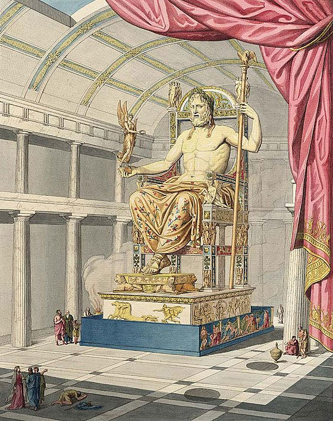

 Первісно сама Олімпія являла собою територію, що належала храму перед воротами давньої Піси. Після руйнування Піси в 641 до н. е., елейці не дозволили виникнути тут новому місту і, таким чином, назавжди утримали за собою право володіння святилищем. Цій квітучій місцевості був дарований вічний мир, озброєне військо не могло перейти його меж, тому що вся Еліда стала присвяченою верховному олімпійському богу Зевсові. За переказами, саме тут Зевс вступив у боротьбу зі своїм батьком, кровожерливим і віроломним Кроносом, який пожирав своїх дітей, оскільки оракул передбачив йому загибель від руки сина. Врятований матір'ю, змужнілий Зевс, переміг і примусив Кроноса відригнути своїх братів і сестер. На честь цієї перемоги були встановлені Олімпійські ігри, що вперше відбулися у 776 року до н. е. З того часу минуло більше двох століть, і в 456 до н. е. в Олімпії елідський архітектор Лібон почав будувати храм Зевса, який став головною святинею міста. 440 до н. е. над створенням центральної статуї Зевса почав працювати Фідій. Роком раніше він розробив і підготував техніку, щоб дістати достатню кількість золота і слонової кістки. Він вирізав і ліпив частини статуї, перш ніж вони могли бути зібрані в єдине ціле в самому храмі.